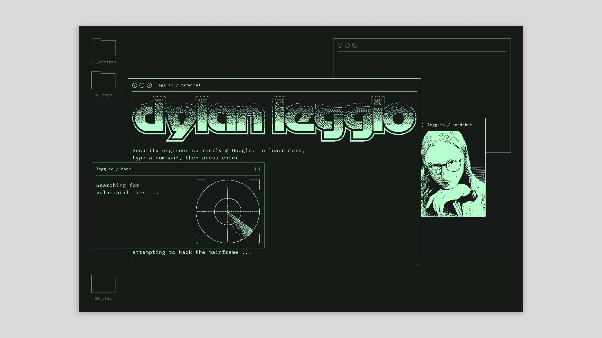
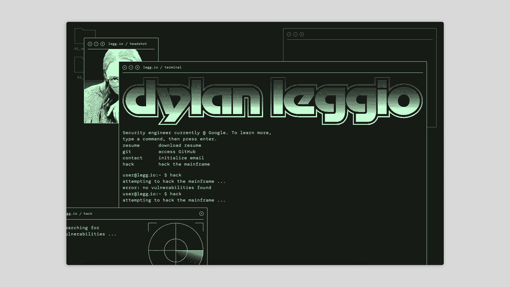

Microsite
Dylan Leggio
Site design and build for Dylan Leggio, a cybersecurity engineer, penetration tester, bug bounty hunter, and hacker-for-hire.
The site is built around a terminal emulator, which the user is taught to interact with as an engineer might engage with a command line interface. Inspired by cyberpunk classics like Hackers and Blade Runner, I suffused the site in retro-futuristic pastiche, with custom loading animations, dithered media, and a CRT-screen palette.
The site's wordmark revives Motter Tektura, a long-deprecated typeface that defined Apple's early years.


In addition to standard interactions, like accessing his resume and code base, visitors can try to "hack" Dylan's site — only to learn it's too well-secured.

A bespoke dithering program renders images and videos in real time, ensuring consistent pattern density across the site, even when images scale up or down.
Users can drag, resize, maximize, minimize, or quit windows, customizing their experience just like they would on a real-world operating system.



Take the terminal for a spin at dylan [dot] legg [dot] io.